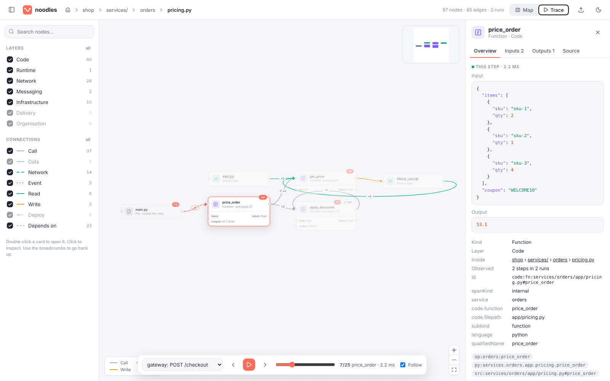
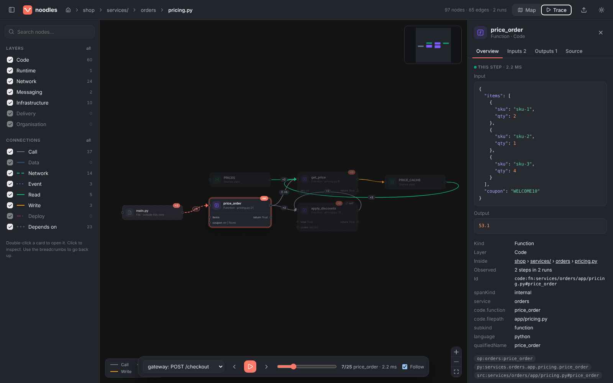

noodles turns any codebase, trace and infrastructure into an n8n-style canvas. Click a node to see what goes in and what comes out.


Every collector writes the same simple graph format. The canvas only reads that format, so new sources show up without UI changes.
Nodes have ports on the left and right, like n8n. Parameters go in, return values come out, and edges connect them.
Start at systems and services, then double-click your way into modules, classes and single functions. Breadcrumbs take you back up.
Import OpenTelemetry traces and step through a request like an n8n execution, with the real payload at every node.
Zero config, runs on your machine, and nothing leaves it. LLM summaries are optional, off by default, and can run on a local model.
Collectors read what you already have. Their graphs merge on stable ids, so one service is one node across code, traces and infrastructure.
Python and TypeScript via tree-sitter, plus Terraform and Kubernetes. No config needed.
noodles scan . # → flowgraph.json
Merge exported OpenTelemetry traces. Spans link to the functions that produced them.
noodles import-traces otlp.json \ --merge flowgraph.json
Search, filter by layer, drill in, and replay executions step by step.
noodles serve # opens the UI
Try the demo: a small shop with four services, Postgres, Kafka, Terraform, Kubernetes and two recorded checkouts.